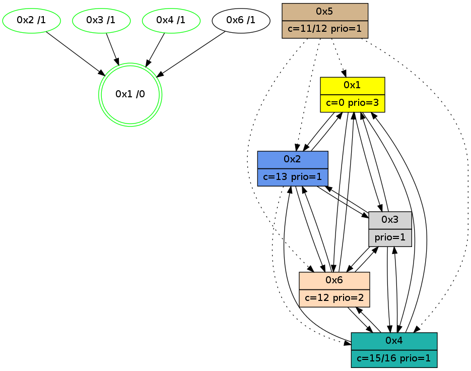

>> << IDX [start] -100 -25 -5 +0 +5 +25 +100 [1095.09037113]
 Previous packets
----------------------------------------------------------------------
1090.169287 beacon01(adaf) #0 coord=01,02,05,03,04,06 cycle=432.0ms assoc
-- color-indic=1 64 4d f9
1090.179249 beacon02(adaf) #0 coord=01,02,05,03,04,06 cycle=432.0ms assoc 64 1c 06
1090.189247 beacon05(adaf) #0 coord=01,02,05,03,04,06 cycle=432.0ms assoc 64 ba 2c
1090.199248 beacon03(adaf) #0 coord=01,02,05,03,04,06 cycle=432.0ms assoc 64 26 08
1090.209248 beacon04(adaf) #0 coord=01,02,05,03,04,06 cycle=432.0ms assoc 64 80 22
1090.219249 beacon06(adaf) #0 coord=01,02,05,03,04,06 cycle=432.0ms assoc 64 f4 3e
1090.231802 [Hello(4): seq=897 sym=2,1,6,3 sysInfo=hasWarning stat=2:0,1,0,0/1:13,14,7,0/6:13,4,11,6/3:3,15,0,3]
1090.234935 [Color(4) seq=178 @0:0 color=15/16 prio=1 c=0,7,c;1,4,6,8,9,b,d,e]
1090.237443 [Color(2) seq=282 @0:0 color=13 prio=1 c=0,7,c,e,f;1,4,6,8,9,b]
----------------------------------------------------------------------
1090.661394 beacon01(adaf) #0 coord=01,02,05,03,04,06 cycle=432.0ms assoc
-- color-indic=1 64 00 fe
1090.671355 beacon02(adaf) #0 coord=01,02,05,03,04,06 cycle=432.0ms assoc 64 51 01
1090.681355 beacon05(adaf) #0 coord=01,02,05,03,04,06 cycle=432.0ms assoc 64 f7 2b
1090.691357 beacon03(adaf) #0 coord=01,02,05,03,04,06 cycle=432.0ms assoc 64 6b 0f
1090.701355 beacon04(adaf) #0 coord=01,02,05,03,04,06 cycle=432.0ms assoc 64 cd 25
1090.711357 beacon06(adaf) #0 coord=01,02,05,03,04,06 cycle=432.0ms assoc 64 b9 39
1090.723049 [Hello(6): seq=811 sym=4,2,1,3 sysInfo=hasWarning stat=4:0,8,7,2/2:11,11,5,0/1:0,2,1,0/3:3,13,0,11]
1090.728992 [Hello(1): seq=798 sym=2,4,6,3 sysInfo=hasWarning,coloring-mode-on,ColoringModeRequestCalled stat=2:8,8,7,0/4:0,7,5,2/6:0,0,0,0/3:4,0,4,1]
1090.731811 [Color(1) seq=324 @0:0 color=0 prio=3 c=c,d,f;7,e]
----------------------------------------------------------------------
1091.153502 beacon01(adaf) #0 coord=01,02,05,03,04,06 cycle=432.0ms assoc
-- color-indic=1 64 c4 91
1091.163465 beacon02(adaf) #0 coord=01,02,05,03,04,06 cycle=432.0ms assoc 64 95 6e
1091.173462 beacon05(adaf) #0 coord=01,02,05,03,04,06 cycle=432.0ms assoc 64 33 44
1091.183463 beacon03(adaf) #0 coord=01,02,05,03,04,06 cycle=432.0ms assoc 64 af 60
1091.193464 beacon04(adaf) #0 coord=01,02,05,03,04,06 cycle=432.0ms assoc 64 09 4a
1091.203464 beacon06(adaf) #0 coord=01,02,05,03,04,06 cycle=432.0ms assoc 64 7d 56
1091.216011 [Hello(4): seq=898 sym=2,1,6,3 sysInfo=hasWarning stat=2:0,2,0,0/1:14,15,7,0/6:14,4,11,6/3:4,15,0,3]
1091.219144 [Color(4) seq=179 @0:0 color=15/16 prio=1 c=0,7,c;1,4,6,8,9,b,d,e]
1091.221659 [Color(2) seq=283 @0:0 color=13 prio=1 c=0,7,c,e,f;1,4,6,8,9,b]
----------------------------------------------------------------------
1091.645609 beacon01(adaf) #0 coord=01,02,05,03,04,06 cycle=432.0ms assoc
-- color-indic=1 64 88 21
1091.655570 beacon02(adaf) #0 coord=01,02,05,03,04,06 cycle=432.0ms assoc 64 d9 de
1091.665571 beacon05(adaf) #0 coord=01,02,05,03,04,06 cycle=432.0ms assoc 64 7f f4
1091.675571 beacon03(adaf) #0 coord=01,02,05,03,04,06 cycle=432.0ms assoc 64 e3 d0
1091.685570 beacon04(adaf) #0 coord=01,02,05,03,04,06 cycle=432.0ms assoc 64 45 fa
1091.711687 [Hello(1): seq=799 sym=2,4,6,3 sysInfo=hasWarning,coloring-mode-on,ColoringModeRequestCalled stat=2:8,9,7,0/4:0,8,5,2/6:0,0,0,0/3:4,0,4,1]
1091.716094 [STC(1) #0.184 new-neigh,tree-change,inconsistent-stability,stable,to-color d=0]
1091.719306 [Color(1) seq=325 @0:0 color=0 prio=3 c=c,d,f;7,e]
----------------------------------------------------------------------
1092.137721 beacon01(adaf) #0 coord=01,02,05,03,04,06 cycle=432.0ms assoc
-- color-indic=1 64 4c 4e
1092.147681 beacon02(adaf) #0 coord=01,02,05,03,04,06 cycle=432.0ms assoc 64 1d b1
1092.157682 beacon05(adaf) #0 coord=01,02,05,03,04,06 cycle=432.0ms assoc 64 bb 9b
1092.167682 beacon03(adaf) #0 coord=01,02,05,03,04,06 cycle=432.0ms assoc 64 27 bf
1092.177682 beacon04(adaf) #0 coord=01,02,05,03,04,06 cycle=432.0ms assoc 64 81 95
1092.187683 beacon06(adaf) #0 coord=01,02,05,03,04,06 cycle=432.0ms assoc 64 f5 89
1092.199601 [Hello(6): seq=812 sym=4,2,1,3 sysInfo=hasWarning stat=4:0,9,7,2/2:11,12,5,0/1:2,4,2,0/3:5,13,0,11]
1092.202280 [STC(2)->1 #0.184 new-neigh,tree-change,inconsistent-stability,stable,to-color d=1]
1092.204123 [Hello(4): seq=899 sym=2,1,6,3 sysInfo=hasWarning stat=2:0,3,0,0/1:15,0,8,0/6:14,4,11,6/3:5,15,0,3]
1092.206627 [Color(2) seq=284 @0:0 color=13 prio=1 c=0,7,c,e,f;1,4,6,8,9,b]
1092.208122 [STC(6)->1 #0.184 new-neigh,tree-change,inconsistent-stability,to-color d=1]
1092.211029 [Color(3) seq=194 @0:0 prio=1 c=0,d,f;7,c,e]
1092.217434 [STC(4)->1 #0.184 new-neigh,tree-change,inconsistent-stability,stable,to-color d=1]
1092.219706 [Color(4) seq=180 @0:0 color=15/16 prio=1 c=0,7,c;1,4,6,8,9,b,d,e]
----------------------------------------------------------------------
1092.629828 beacon01(adaf) #0 coord=01,02,05,03,04,06 cycle=432.0ms assoc
-- color-indic=1 64 12 2f
1092.639789 beacon02(adaf) #0 coord=01,02,05,03,04,06 cycle=432.0ms assoc 64 43 d0
1092.659790 beacon03(adaf) #0 coord=01,02,05,03,04,06 cycle=432.0ms assoc 64 79 de
1092.669790 beacon04(adaf) #0 coord=01,02,05,03,04,06 cycle=432.0ms assoc 64 df f4
1092.696029 [Hello(1): seq=800 sym=2,4,6,3 sysInfo=hasWarning,coloring-mode-on,ColoringModeRequestCalled stat=2:9,10,8,0/4:1,9,6,2/6:1,0,1,0/3:4,1,4,1]
1092.700110 [Color(1) seq=326 @0:0 color=0 prio=3 c=c,d,f;7,e]
----------------------------------------------------------------------
1093.121936 beacon01(adaf) #0 coord=01,02,05,03,04,06 cycle=432.0ms assoc
-- color-indic=1 64 d6 40
1093.131898 beacon02(adaf) #0 coord=01,02,05,03,04,06 cycle=432.0ms assoc 64 87 bf
1093.141897 beacon05(adaf) #0 coord=01,02,05,03,04,06 cycle=432.0ms assoc 64 21 95
1093.151897 beacon03(adaf) #0 coord=01,02,05,03,04,06 cycle=432.0ms assoc 64 bd b1
1093.161897 beacon04(adaf) #0 coord=01,02,05,03,04,06 cycle=432.0ms assoc 64 1b 9b
1093.171899 beacon06(adaf) #0 coord=01,02,05,03,04,06 cycle=432.0ms assoc 64 6f 87
1093.183603 [Hello(6): seq=813 sym=4,2,1,3 sysInfo=hasWarning stat=4:0,10,8,2/2:11,12,5,0/1:3,5,2,0/3:6,14,0,11]
1093.186271 [Color(2) seq=285 @0:0 color=13 prio=1 c=0,7,c,e,f;1,4,6,8,9,b]
1093.188089 [Hello(4): seq=900 sym=2,1,6,3 sysInfo=hasWarning stat=2:0,3,0,0/1:0,1,8,0/6:14,4,11,6/3:6,15,0,3]
1093.191853 [Color(4) seq=181 @0:0 color=15/16 prio=1 c=0,7,c;1,4,6,8,9,b,d,e]
----------------------------------------------------------------------
1093.614043 beacon01(adaf) #0 coord=01,02,05,03,04,06 cycle=432.0ms assoc
-- color-indic=1 64 9a f0
1093.624007 beacon02(adaf) #0 coord=01,02,05,03,04,06 cycle=432.0ms assoc 64 cb 0f
1093.634005 beacon05(adaf) #0 coord=01,02,05,03,04,06 cycle=432.0ms assoc 64 6d 25
1093.644005 beacon03(adaf) #0 coord=01,02,05,03,04,06 cycle=432.0ms assoc 64 f1 01
1093.654005 beacon04(adaf) #0 coord=01,02,05,03,04,06 cycle=432.0ms assoc 64 57 2b
1093.664006 beacon06(adaf) #0 coord=01,02,05,03,04,06 cycle=432.0ms assoc 64 23 37
1093.675782 [Hello(2): seq=1387 sym=3,6,1 asym=4 sysInfo=hasWarning stat=3:4,3,8,1/6:4,0,3,0/1:5,4,8,0/4:11,2,4,1]
1093.678975 [Hello(1): seq=801 sym=2,4,6,3 sysInfo=hasWarning,coloring-mode-on,ColoringModeRequestCalled stat=2:9,11,8,0/4:2,10,6,2/6:2,0,1,0/3:4,1,4,1]
1093.682426 [Color(1) seq=327 @0:0 color=0 prio=3 c=c,d,f;7,e]
----------------------------------------------------------------------
1094.106152 beacon01(adaf) #0 coord=01,02,05,03,04,06 cycle=432.0ms assoc
-- color-indic=1 64 5e 9f
1094.116114 beacon02(adaf) #0 coord=01,02,05,03,04,06 cycle=432.0ms assoc 64 0f 60
1094.126113 beacon05(adaf) #0 coord=01,02,05,03,04,06 cycle=432.0ms assoc 64 a9 4a
1094.136113 beacon03(adaf) #0 coord=01,02,05,03,04,06 cycle=432.0ms assoc 64 35 6e
1094.146114 beacon04(adaf) #0 coord=01,02,05,03,04,06 cycle=432.0ms assoc 64 93 44
1094.156114 beacon06(adaf) #0 coord=01,02,05,03,04,06 cycle=432.0ms assoc 64 e7 58
1094.167813 [STC(1) #0.185 new-neigh,tree-change,inconsistent-stability,stable,to-color d=0]
1094.170503 [Color(2) seq=286 @0:0 color=13 prio=1 c=0,7,c,e,f;1,4,6,8,9,b]
1094.172299 [Hello(4): seq=901 sym=2,1,6,3 sysInfo=hasWarning stat=2:0,3,0,0/1:1,2,8,0/6:14,4,11,6/3:7,15,0,3]
1094.176062 [Color(4) seq=182 @0:0 color=15/16 prio=1 c=0,7,c;1,4,6,8,9,b,d,e]
----------------------------------------------------------------------
1094.598262 beacon01(adaf) #0 coord=01,02,05,03,04,06 cycle=432.0ms assoc
-- color-indic=1 64 13 98
1094.618223 beacon05(adaf) #0 coord=01,02,05,03,04,06 cycle=432.0ms assoc 64 e4 4d
1094.648226 beacon06(adaf) #0 coord=01,02,05,03,04,06 cycle=432.0ms assoc 64 aa 5f
1094.659751 [Hello(3): seq=900 sym=6,2,1,4 sysInfo=hasWarning stat=6:0,2,6,4/2:1,10,3,0/1:5,7,3,1/4:2,12,6,2]
1094.662109 [Hello(1): seq=802 sym=2,4,6,3 sysInfo=hasWarning,coloring-mode-on,ColoringModeRequestCalled stat=2:9,12,8,0/4:3,11,6,2/6:2,0,1,0/3:4,1,4,1]
1094.664284 [Color(1) seq=328 @0:0 color=0 prio=3 c=c,d,f;7,e]